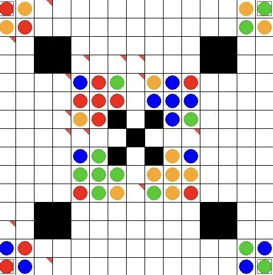
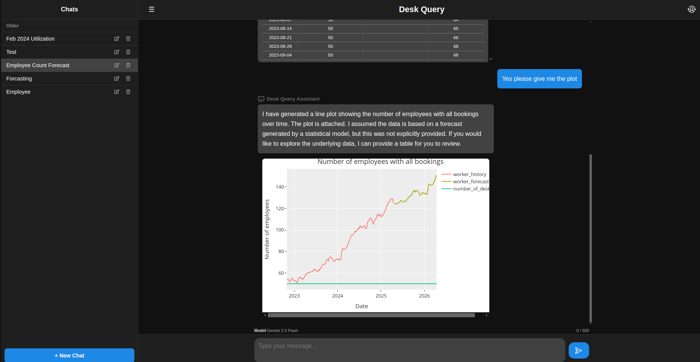
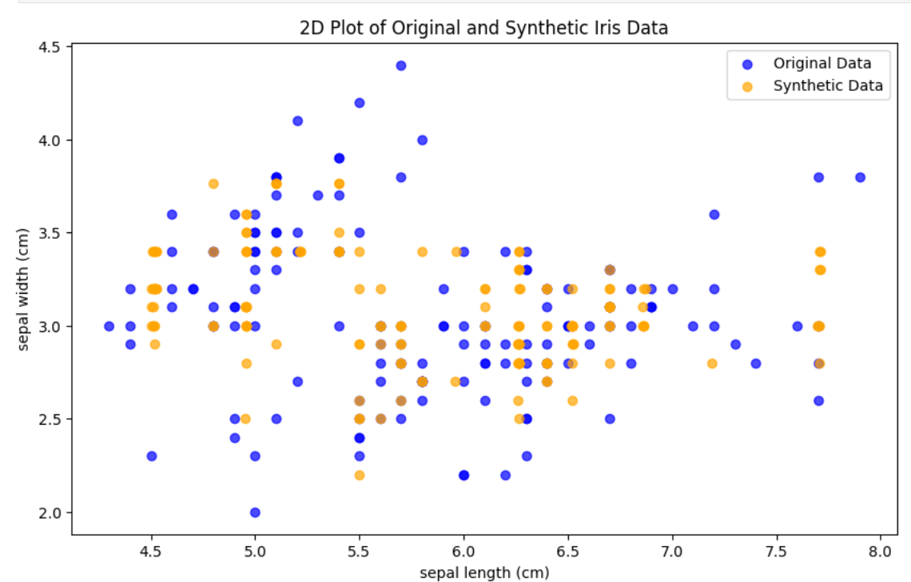

About
I am a Data Science student with a strong focus on Machine Learning and Generative AI, combining academic research with hands-on industry experience through a dual study program. Alongside my studies, I worked in an AI R&D environment, contributing to applied machine learning projects under real-world constraints. My work spans generative modeling, reinforcement learning, robustness analysis, and distribution-level evaluation of ML systems.
Student & Researcher
Industry Experience
Generative Models
Resume
04.2026 - Today
Studying Data Science at University of Regensburg
I am pursuing a Master in Data Science at the Faculty of Informatics and Data Science at the University of Regensburg, with the specializations on Machine Learning and Statistics.
09.2025 - 02.2026
Bachelor Thesis
Examined the feasibility of generating synthetic radar point-cloud data using diffusion models and evaluated the Fréchet Radar Distance (FRD), a radar-specific adaptation of FID for distribution-level evaluation. Designed and implemented the full experimental pipeline in Python/PyTorch, focusing on statistical validation, generative convergence, and principled performance measurement.
10.2025 - 03.2026
Studying AI and Data Science at University of Applied Science Regensburg
Completed a 7-semester dual Bachelor’s degree in AI and Data Science at OTH Regensburg, including an integrated industry placement semester. The program combined academic training in machine learning, statistics, data engineering, and artificial intelligence with continuous practical experience in my dual studi partner company Continental / Aumovio. Focus areas included supervised and unsupervised learning, neural networks, data pipelines, model evaluation, and generative ai.
10.2022 - 02.2026
Dual Study Program at Continental AG / Aumovio
As part of my dual study program, I worked full-time during semester breaks, the dedicated practical semester, and throughout my Bachelor’s thesis, resulting in approximately 1.5 years of hands-on full-time industry experience. I was embedded in an R&D department for AI, contributing to applied AI development in an industrial context. During my practical semester, I evaluated integrating generative AI methods for sensor data within an ongoing series production project under real-world constraints.
10.2025 - 02.2026
Tutor for Nonlinear Methods in AI at OTH
Led tutorial sessions for “Nonlinear Methods in AI” (Analysis II / multivariable calculus), covering gradients, Hessians, and nonlinear optimization.
10.2023 - 02.2024
Tutor for Mathematics I (Linear Algebra I) at OTH
Led weekly tutorial sessions for a group of undergraduate students in Linear Algebra I.
Projects

AlphaZero for Reversi — Multi-Player & Custom Maps
2025Implementation of AlphaZero for a generalized multi-player Reversi variant. The system combines a PyTorch ResNet (policy + value head) with Monte Carlo Tree Search and parallel self-play. Supports arbitrary board sizes, custom map generation, and integrates a high-performance C++ game engine.
PyTorch
AlphaZero
MCTS
C++ Backend
Parallel Self-Play

Deskquery — AI Desk Booking Analytics
2025University project: Developed an AI-powered desk analytics assistant that translates natural language queries into validated backend function calls. Built with Flask and Python, integrating LLM-based intent detection, simulation logic, and interactive data visualizations for workplace utilization analysis.
Python
Flask
LLM Integration
Analytics
Plotly

Conditional GAN for Tabular Data Generation
2025Implemented a conditional GAN for synthetic tabular data generation inspired by CTGAN. Supports conditional sampling, custom loss functions, and experimentation with training dynamics. Focused on stabilizing GAN training for mixed continuous/categorical datasets and evaluating distributional quality of generated samples.
PyTorch
GAN
Conditional Generation
Tabular Data
XAI-AttackBench — Black-Box Attacks on LIME & SHAP
2025Developed a modular benchmark for evaluating the robustness of post-hoc explanation methods (LIME, SHAP) against black-box adversarial attacks under prediction fidelity constraints. The framework maximizes explanation drift while keeping model outputs nearly unchanged, enabling systematic analysis of explanation stability on tabular data.
Explainable AI
Adversarial Attacks
Black-Box Setting
Robustness Evaluation
Python